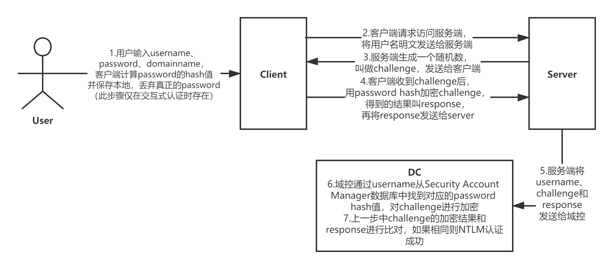

概述
最近做了很多安全整改的事情，包括禁用SMBv1协议，开启SMB协议传输加密，开启NTLMv2认证等等，也尝试做了RHEL集成Active Directory来实现统一账户管理，发现自己在Windows认证方面存在大块知识盲区，趁着还在兴头上，赶紧研究一下。参考文档：
Microsoft NTLM
Microsoft Negotiate
Microsoft Kerberos
首先科普一个知识点
为什么需要采用hash做加密或签名算法，它有什么特点？
-
不可逆性。当你得到一个值x的hash值的时候，你没有办法倒推得到值x。
-
无冲突性。当你知道一个值x，你无法求出一个y，使得x与y的hash值相同。
*实际上这两条特性在数学上是不成立的，一个函数必然是可逆的，另外由于hash函数的值域有限，理论上存在无穷多个不同的值，它们的hash值相同。比较有名的hash算法MD5和SHA实现的是，求逆和求冲突在计算上不可能，也就是正向计算很容易，而反向计算即使穷尽人类所有的计算资源都做不到。
Windows本地认证
Windows以明文形式存储用户密码么？答案是否定的，Windows将用户的明文密码经过NTLM Hash算法加密后，存储在%SystemRoot%\System32\config\sam文件中。当用户登录时，将用户输入的明文密码也用NTLM Hash算法加密，得到的Hash值与sam中的值进行对比。如果结果相同，则认证通过，成功登录。反之，登录失败。本地登录时，两个进程参与工作winlogon和lsass。简单来说就是winlogon接收用户输入账号密码，把用户密码交给lsass进程做密码比对。

Windows网络认证——NTLM认证
Windows网络认证主要分为NTML认证和Kerberos认证，先讲一下NTML认证。认证流程主要分为协商、质询Challenge/Response、验证三步骤。在协商阶段，客户端和服务端确认使用什么认证协议，是使用Kerberos还是NTLMv1或者NTLMv2？微软官方是推荐通过协商来选择更安全的认证协议的。如果选择了NTLM认证，则进入下一步质询Challenge/Response。NTLM分为交互式和非交互式两种类型，交互式即用户客户端登录，只有客户端和域控参与此认证过程。非交互式指客户端要去连接某台服务器并访问相关服务，这种情况下会有客户端、服务端和域控三方参与认证过程。下面简述一下非交互式的认证步骤。其中第一步提供用户名和密码仅存在于交互式认证。

- (仅限交互式认证)用户登录时输入的user name、password和domain name，然后Client端计算password的hash值并保存在本地并且丢弃真正的password
- 客户端将user name的明文发送给服务端
- 服务端生成一个随机数，叫做challenge，传输给client
- client收到challenge以后，将challenge用password hash加密，得到的结果叫做response，然后将response传给server
- server端将以下三份内容发送给DC，user name、challenge、response。
- DC在收到user name，response，challenge以后，根据user name在account database中找到其对应的password hash，然后用这个password hash加密challenge
- DC将response与上一步加密后的challenge进行比较，如果相同则NTLM验证成功。
最后再提一下NTLM v1和NTLM v2的区别吧
- Challenge，v1的Challenge有8位，而v2的Challenge是16位。
- 对Challenge加密的算法不同，v1算法为DES，v2算法是HMAC-MD5。